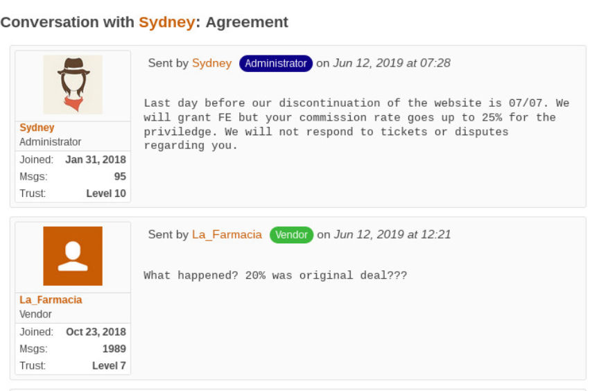
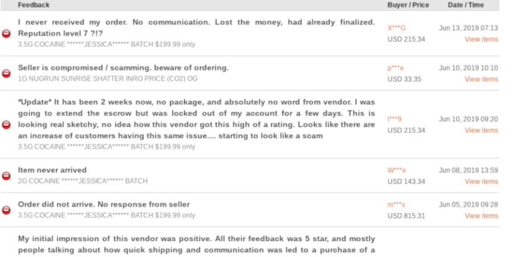
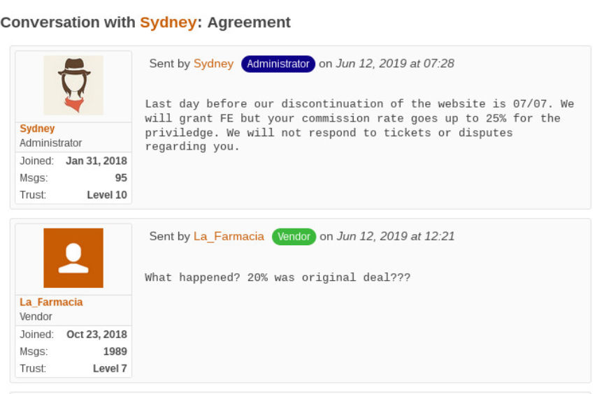
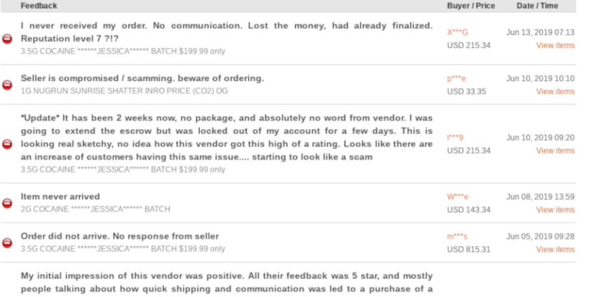

Fear, Uncertainty, and Doubt: the "Empire Exit Scam" Message
~6 min read | Published on 2019-06-15, tagged Darkweb-Market, Exit-Scammed using 1338 words.
In June, a Dread user uploaded a picture of supposed evidence that the largest darkweb marketplace, Empire Market, planned to exit scam on July 7, 2019. The screenshot—purportedly between a vendor and the administrator of Empire Market—is likely the work of someone actively spreading misinformation about the marketplace.
Edit: Empire Market staff member Se7en found this post too vague regarding the faked screenshots. Here is a clarity update: the screenshots are fake. The good news for everyone emailing me about the lack of any support presence on the market is that support clearly exists.
The Screenshot
An entity using the name ScammerLee posted a screenshot on the Empire Market subdread on June 13, 2019, that depicted a conversation between the darkweb vendor La_Farmacia and Syndey, an admin of Empire Market. In their conversation, the administrator had sent a response to La_Farmacia’s request for FE privileges (the ability to receive funds up front instead up waiting for a package delivery).
The purported messages between the market admin and vendor have a timestamp indicating the conversation took place on June 12.
Syndey: Last day before our discontinuation of the website is 07/07. We will grant FE but your commission rate goes up to 25% for the priviledge. We will not respond to tickets or disputes regarding you.
La_Farmacia: What happened? 20% was original deal???

The short conversation lacks any significant information to the outsider. But to people using Empire Market or with funds on the market, the “discontinuation of the website is 07/07” is a cause for concern.
The OP of the post, ScammerLee, claimed he had hacked the vendor’s account and had access to the vendor’s messages.
the dumbass uses WIN 10 with a outdated bios firmware. Was fairly simple deploying my rat. wasn’t even a hack into his account..he just leaves his computer on and paged logged in all the time.
Assuming ScammerLee had actually hacked the vendor’s account, he would have effectively needed an unrealistic level of skill to remotely inject a remote control system into the bios of an unknown manufacturer’s computer. In a Trend Micro post about a BIOS rootkit, a summary of such an attack as presented by the Hacking Team is described as follows:
An example attack scenario would be: The intruder gets access to the target computer, reboots into UEFI shell, dumps the BIOS, installs the BIOS rootkit, reflashes the BIOS, and then reboots the target system.
(Credit for finding that Trend Micro post goes to the Dread user /u/boogknight.)
We now know that the source of the screenshot is completely unreliable.
The “Hacked” Vendor Account
On May 27, a post on Darknet Avengers indicated that the vendor La_Farmacia had lost access to his account. An account under the same name posted a message signed with the vendor’s real PGP key. “Someone changed my PGP on the account now I can’t log in,” La_Farmacia wrote.
Here is the signed message. It was signed by the vendor’s original PGP key:-----BEGIN PGP SIGNED MESSAGE-----Hash: SHA512Looks like I got hacked on the Empire. Someone changed my PGP on the account now I can't log in. I wonder how is that possible if I had 2FA enabled with my real key, anyone has an idea? don't place orders with me on Empire until you verify that my real key is back up on the account.-----BEGIN PGP SIGNATURE-----iQIzBAEBCgAdFiEEp7yxKxo5RjrQ7H4iCjHLsOVDtzMFAlzrVSoACgkQCjHLsOVDtzMRfBAAqPZgXkLZhOoUrJvFZNpMks3sRsLECMhcuy2CGLNoefMOP/mcahzWS+uj9jQ+UaJyp8GNcFaiErlcfAYGuGbWJ4MrxrcrMO9zoC7UpZIk8Sj/lhR3kX+yh421Gr68vjqPAyAhsCvDebQDuwPMXZRdW8mGjiVU+7JVq5Ky0G6HysLsx4mwa1uH8nCXDiE/H8IvEm4JuZuL6X7orw4zbxiDM3aFXkOWtJw5zVDea7qwu0xGPIdKXyQJItJ5rtnRGelU2Aoib/T8bH0mp9VkSr2x7AE/I0jrvjsfmduwWCQKKuDWg/vmyfWHikFws8AH2q5rmY+ESr7uXHHCqUnYUvMkgxHIpPFW1kCNqR4V1Y6wYZkVZMskAzHyEhTpNOzWrNLqtlZq08j5xF294sR+iAaqUAiWL0oRJXlTOwIZFZRIO4zIx83+Y+GlmucsXR8GPOcBIFe3mwbYiFs6cGF9xFl8sIQEF9l6KmYBSajTpftLklz5zp1DzCbxfPhCaxG2WnkVHl1MTaSsVCnBmQvT6amdzjcpDdFn0r8j5iWODYhNqvz3SoCXd9K75hJ4hdymKpMGSfLm5o3fCj8Oayc0MPQL5aX9+Xq1Vgr+6W9E/9qfp++lRfILBMHv3edTFOr6qCAQVpk8n6r49qZBDxAVaKPhQl28qVZLLLuyRDSYLRiZaPU==3umh-----END PGP SIGNATURE-----
The same user, on June 5, posted the following:
ALERT!!! ALERT!!! ALERT!!!
Our EMPIRE ACCOUNT HAS BEEN HACKED DO NOT PLACE ANY ORDERS UNTIL FURTHER NOTICE PLACE ORDERS ONLY La_Farmacia1. Verify my PGP key on the profile and you will see that it’s the same key we have always used.
Peace and Love,
-team La_Farmacia
Recent feedback on both La_Farmacia and La_Farmacia1 indicate that the vendor has exit scammed. So does the feedback on the vendor’s account for selling marijuana: SpriteLee. The other accounts allegedly owned by the vendor also have feedback indicating that the vendor is no longer shipping packs and is requiring users to finalize early. If customers question the finalize early request, the vendor allegedly tells them that he will not be sending their product.

It now seems the vendor has access to his main vendor account on Empire Market. The PGP key is no longer different than the original La_Farmacia key (A7BCB12B1A39463AD0EC7E220A31CBB0E543B733)
Perhaps the most damning piece of evidence is that La_Farmacia’s account on Empire market is still set to Escrow-only and the vendor is still messaging users and requesting that they mark the package as delivered (this is a forbidden practice on most markets and is considered an unofficial version of market-endorsed FE privileges.
The Message
La_Farmacia is sending customers a message with the following content:
Dear Customers,
We have some fairly good news for you. Our shop has recently received back the temporary access to our seller account at Empire via private mirror link, which we would love to share with you as our valuable client.
[redacted] (save it & don’t share it please)
We will also be granting all of our customers the 108 extra on any following purchases as an expression of an apology.
We truly feel your frustration and are actively keeping track of the issue while working closely with the Empire team to keep our customers updated until this matter is resolved.
We would like to thank you for your patience and apologize for the inconvenience caused,
La Farmacia
The link included in the message is a link to what appears to be an Empire Market mirror. Logins work. Registrations work. You can login with an Empire Market account. You can create an account on his “private” mirror and then login to Empire Market with the same login. Two things stand out, though.
The mirror provided by La_Farmacia is not verifiable like all other Empire Market mirrors. When attempting to verify the mirror through the /verify link on the “private” Empire Market landing page, the user will be directed to an endless loop of failed captchas. On the real Empire Market, completion of the captcha leads to a page with signed proof that the current link is a valid Empire Market address. The headers returned from the “private” Empire Market do not match those returned by the real Empire Market to a significant degree. This itself is cause for concern. One of the few reasons La_Farmacia would be sending out a fake link to Empire Market is to harvest credentials. Which seems odd, especially when he wants users to use the link to purchase from him on the market. If the customers were trying to place an order with the vendor, why would the vendor send the customers somewhere else to place an order? The money would end up in the vendors account either way.
Conclusion
I am very sorry to have left readers with no real conclusion whatsoever as to whether or not the screenshot is fake. I know some hard evidence would make things easier. But from the information above, hopefully one can draw their own conclusions as to the validity of the screenshot based on the legitimacy of the source.
We know that the vendor’s account was not hacked. We know he stopped mailing packages. We know he sent users an message with a link to not-Empire-Market. And we know the vendor still lacks FE privileges.
I personally believe the screenshot is fake and is not proof that Empire Market will exit scam on July 7, 2019. Will they exit scam in the future? Who knows. Most markets either get seized or exit scam. But this screenshot is not evidence of an impending exit scam. Customers are finally reporting that their tickets are being fulfilled.
Also, from a logical perspective, why would the market administrator both provide a vendor with the ability to quickly remove his funds from wallets controlled by the market and tell the vendor that he planned to vanish with the funds from vendors and customers? This would reduce the funds available to the market in the event of an exit scam. FE privileges are great for vendors looking to exit scam. They are not beneficial to a market looking to make the same move.
Edit: Empire Market staff member Se7en found this post too vague regarding the faked screenshots. Here is a clarity update: the screenshots are fake. The good news for everyone emailing me about the lack of any support presence on the market is that support clearly exists.
The Screenshot
An entity using the name ScammerLee posted a screenshot on the Empire Market subdread on June 13, 2019, that depicted a conversation between the darkweb vendor La_Farmacia and Syndey, an admin of Empire Market. In their conversation, the administrator had sent a response to La_Farmacia’s request for FE privileges (the ability to receive funds up front instead up waiting for a package delivery).
The purported messages between the market admin and vendor have a timestamp indicating the conversation took place on June 12.
Syndey: Last day before our discontinuation of the website is 07/07. We will grant FE but your commission rate goes up to 25% for the priviledge. We will not respond to tickets or disputes regarding you.
La_Farmacia: What happened? 20% was original deal???

Empire Market Exit Scam
The short conversation lacks any significant information to the outsider. But to people using Empire Market or with funds on the market, the “discontinuation of the website is 07/07” is a cause for concern.
The OP of the post, ScammerLee, claimed he had hacked the vendor’s account and had access to the vendor’s messages.
the dumbass uses WIN 10 with a outdated bios firmware. Was fairly simple deploying my rat. wasn’t even a hack into his account..he just leaves his computer on and paged logged in all the time.
Assuming ScammerLee had actually hacked the vendor’s account, he would have effectively needed an unrealistic level of skill to remotely inject a remote control system into the bios of an unknown manufacturer’s computer. In a Trend Micro post about a BIOS rootkit, a summary of such an attack as presented by the Hacking Team is described as follows:
An example attack scenario would be: The intruder gets access to the target computer, reboots into UEFI shell, dumps the BIOS, installs the BIOS rootkit, reflashes the BIOS, and then reboots the target system.
(Credit for finding that Trend Micro post goes to the Dread user /u/boogknight.)
We now know that the source of the screenshot is completely unreliable.
The “Hacked” Vendor Account
On May 27, a post on Darknet Avengers indicated that the vendor La_Farmacia had lost access to his account. An account under the same name posted a message signed with the vendor’s real PGP key. “Someone changed my PGP on the account now I can’t log in,” La_Farmacia wrote.
La_Farmacia Darknet Avengers
Here is the signed message. It was signed by the vendor’s original PGP key:-----BEGIN PGP SIGNED MESSAGE-----Hash: SHA512Looks like I got hacked on the Empire. Someone changed my PGP on the account now I can't log in. I wonder how is that possible if I had 2FA enabled with my real key, anyone has an idea? don't place orders with me on Empire until you verify that my real key is back up on the account.-----BEGIN PGP SIGNATURE-----iQIzBAEBCgAdFiEEp7yxKxo5RjrQ7H4iCjHLsOVDtzMFAlzrVSoACgkQCjHLsOVDtzMRfBAAqPZgXkLZhOoUrJvFZNpMks3sRsLECMhcuy2CGLNoefMOP/mcahzWS+uj9jQ+UaJyp8GNcFaiErlcfAYGuGbWJ4MrxrcrMO9zoC7UpZIk8Sj/lhR3kX+yh421Gr68vjqPAyAhsCvDebQDuwPMXZRdW8mGjiVU+7JVq5Ky0G6HysLsx4mwa1uH8nCXDiE/H8IvEm4JuZuL6X7orw4zbxiDM3aFXkOWtJw5zVDea7qwu0xGPIdKXyQJItJ5rtnRGelU2Aoib/T8bH0mp9VkSr2x7AE/I0jrvjsfmduwWCQKKuDWg/vmyfWHikFws8AH2q5rmY+ESr7uXHHCqUnYUvMkgxHIpPFW1kCNqR4V1Y6wYZkVZMskAzHyEhTpNOzWrNLqtlZq08j5xF294sR+iAaqUAiWL0oRJXlTOwIZFZRIO4zIx83+Y+GlmucsXR8GPOcBIFe3mwbYiFs6cGF9xFl8sIQEF9l6KmYBSajTpftLklz5zp1DzCbxfPhCaxG2WnkVHl1MTaSsVCnBmQvT6amdzjcpDdFn0r8j5iWODYhNqvz3SoCXd9K75hJ4hdymKpMGSfLm5o3fCj8Oayc0MPQL5aX9+Xq1Vgr+6W9E/9qfp++lRfILBMHv3edTFOr6qCAQVpk8n6r49qZBDxAVaKPhQl28qVZLLLuyRDSYLRiZaPU==3umh-----END PGP SIGNATURE-----
The same user, on June 5, posted the following:
ALERT!!! ALERT!!! ALERT!!!
Our EMPIRE ACCOUNT HAS BEEN HACKED DO NOT PLACE ANY ORDERS UNTIL FURTHER NOTICE PLACE ORDERS ONLY La_Farmacia1. Verify my PGP key on the profile and you will see that it’s the same key we have always used.
Peace and Love,
-team La_Farmacia
Recent feedback on both La_Farmacia and La_Farmacia1 indicate that the vendor has exit scammed. So does the feedback on the vendor’s account for selling marijuana: SpriteLee. The other accounts allegedly owned by the vendor also have feedback indicating that the vendor is no longer shipping packs and is requiring users to finalize early. If customers question the finalize early request, the vendor allegedly tells them that he will not be sending their product.

La_Farmacia Negative Feedback
It now seems the vendor has access to his main vendor account on Empire Market. The PGP key is no longer different than the original La_Farmacia key (A7BCB12B1A39463AD0EC7E220A31CBB0E543B733)
Perhaps the most damning piece of evidence is that La_Farmacia’s account on Empire market is still set to Escrow-only and the vendor is still messaging users and requesting that they mark the package as delivered (this is a forbidden practice on most markets and is considered an unofficial version of market-endorsed FE privileges.
La_Farmacia No FE
The Message
La_Farmacia is sending customers a message with the following content:
Dear Customers,
We have some fairly good news for you. Our shop has recently received back the temporary access to our seller account at Empire via private mirror link, which we would love to share with you as our valuable client.
[redacted] (save it & don’t share it please)
We will also be granting all of our customers the 108 extra on any following purchases as an expression of an apology.
We truly feel your frustration and are actively keeping track of the issue while working closely with the Empire team to keep our customers updated until this matter is resolved.
We would like to thank you for your patience and apologize for the inconvenience caused,
La Farmacia
The Police Sent This Not La Farmacia
The link included in the message is a link to what appears to be an Empire Market mirror. Logins work. Registrations work. You can login with an Empire Market account. You can create an account on his “private” mirror and then login to Empire Market with the same login. Two things stand out, though.
Conclusion
I am very sorry to have left readers with no real conclusion whatsoever as to whether or not the screenshot is fake. I know some hard evidence would make things easier. But from the information above, hopefully one can draw their own conclusions as to the validity of the screenshot based on the legitimacy of the source.
I personally believe the screenshot is fake and is not proof that Empire Market will exit scam on July 7, 2019. Will they exit scam in the future? Who knows. Most markets either get seized or exit scam. But this screenshot is not evidence of an impending exit scam. Customers are finally reporting that their tickets are being fulfilled.
Also, from a logical perspective, why would the market administrator both provide a vendor with the ability to quickly remove his funds from wallets controlled by the market and tell the vendor that he planned to vanish with the funds from vendors and customers? This would reduce the funds available to the market in the event of an exit scam. FE privileges are great for vendors looking to exit scam. They are not beneficial to a market looking to make the same move.